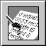

Copyright ©1995 by NeXT Computer, Inc. All Rights Reserved.
| 10 |
The PostScript Previewers: Yap and pft
|  |
| Yap is an interactive PostScript previewer for developers who want to write and test PostScript code. Yap lets you enter, edit, and execute PostScript code on the fly and allows you to read and write text files so the code can be used elsewhere. Yap is intended for experimenting with short, hand-created segments of PostScript. It's not useful for previewing page-oriented documents, because it ignores all Encapsulated PostScript comments (such as %%BoundingBox and %%Page). For viewing page-oriented documents, use the Preview application located in /NextApps.
The chapter also contains information about a related program, pft, which you can use if you need to communicate with the PostScript Window Server. pft is a command-line utility that runs in a Terminal window, so for general-purpose PostScript editing and viewing it's easier to use Yap. |
| Using Yap |
| Yap is straightforward to use. Choose the Open or New command in the Document menu to open a document window. Select the Execute command in the Document menu to execute the PostScript code that's in the main window.
The result is displayed in the Output window, and PostScript errors are reported in the title bar of the Output window. If there are no errors in the execution of your code, the execution time is reported in the title bar instead. There's only one Output window. Its PostScript rendering area can be resized using the Preferences panel (choose the Preferences command in the Info menu). The Preferences panel also contains options for showing and clearing the PostScript cache. If you change the font in a Yap window, that font will be used in Yap windows created after that as well. The font will also be written to your defaults database and be used the next time you launch Yap. Yap can paste PostScript from the pasteboard; this is useful when debugging programs that write PostScript on the pasteboard. The Paste menu command first checks the pasteboard for PostScript data, then for text data. You can find some sample PostScript programs in the following directory: |
 /NextDeveloper/Examples/PostScript
/NextDeveloper/Examples/PostScript
| The following directory contains the source code for Yap: |
 /NextDeveloper/Examples/Yap
/NextDeveloper/Examples/Yap
| Feel free to modify the source code and create your own custom version of the application. |
| Yap Command Reference |
| This section describes the application-specific menus and commands available in Yap. For descriptions of standard menus and commands, see the User's Guide.
Commands in the Main Menu Yap's main menu contains the standard Info, Edit, Windows, Print, Services, Hide, and Quit commands. The Format menu contains the Font command for bringing up the Font menu, and the Page Layout command.
Commands in the Document Menu The Document menu provides the standard Open, New, Save, and Save As commands for working with PostScript document windows, plus the Execute command described here. |
| Command | Description | |
| Execute | Executes the PostScript code contained in the main window and displays the results in the Output window. |
| The NEXTSTEP Window Server Interface: pft |
| pft is a simple shell-based utility for communicating with the NEXTSTEP Window Server. You start up the pft program by typing the program name in a shell window. pft first forms a connection to the Window Server. pft then sends the Window Server PostScript code that you type in the shell window, and prints out data received from the Window Server. (pft displays both error messages and values returned by the Window Server on the standard output, in the same window where you type.) Use Control-D to quit pft.
The following command-line options are available: |
| -NXHost hostname | Directs pft to connect to the Window Server running on the machine hostname. If this option isn't used, the local Window Server is assumed. | |
| -f file | Causes the contents of file to be sent to the Window Server before user input is accepted. | |
| -s | Causes pft to exit after a file specified with -f is sent to the Window Server. | |
| -NXPSName string | Sets the string that pft uses to find the Window Server that it will connect to. This should be the name that the Window Server used to register itself with nmserver, the Network Message Server. If this option isn't used, the default Window Server name is assumed. |
| pft sends one line of PostScript to the Window Server at a time, and each line is interpreted by the Window Server immediately after you press Return.
Starting the pft Program To run the pft program, enter its name in a shell window: |
| pft |
| When pft responds with "Connection to PostScript established," it's ready to accept PostScript code. If you're running pft in a Terminal window, you can cut and paste PostScript code from another application.
When you're finished, quit by typing Control-D (or Control-C) in the shell window that pft is running in.
Executing PostScript Code from a File To execute PostScript commands that are contained in a file, you can start pft using the -f option: |
| pft -f file |
| The file argument must be an absolute pathname (that is, starting with either / or ~), as shown in these two examples: |
 pft -f /me/myProgram.ps
pft -f /me/myProgram.ps
 pft -f ~/myProgram.ps
pft -f ~/myProgram.ps
| Alternatively, once you've started running pft the contents of a PostScript file can be executed using the PostScript run operator: |
| (file) run |
| In this case, the file name must be an absolute pathname that doesn't start with ~: |
 (/me/myProgram.ps) run
(/me/myProgram.ps) run
| Setting Up a Window
The first thing you'll probably want to do in pft, once it has established a connection to the Window Server, is set up a window to draw in. There are two ways to do this: |
| Obtain the window number of a window the Server has already set up for some other application (usually one you are using pft to debug), and do your drawing in that window. | ||
| Set up a new window using the PostScript window operator. |
| To create a window with the window operator, pass it arguments for its origin, size, and type: |
| x y width height type window window |
| where type is one of Retained, Nonretained, or Buffered: |
| Retained | (0) | |
| Nonretained | (1) | |
| Buffered | (2) |
| The window operator returns a unique ID number for the window, and places this number on the operand stack. You'll need this number in order to refer to the window; for ease of reference you can assign the returned window number to a variable, as follows: |
 /myWindow
/myWindow
 100 100 500 500 Buffered window
100 100 500 500 Buffered window
 def
def
| The new window isn't in the screen list yet, and therefore doesn't appear on the screen and doesn't receive user events. You can add the window to the screen list with the orderwindow operator: |
| place otherwindow window orderwindow |
| The location of the window in the screen list is specified by place, which can be one of Below, Out, or Above: |
| Below | ( | |
| Out | (0) | |
| Above | (1) |
| otherwindow should be another window number, or 0 if you want to place the new window above or below all windows currently in the window list.
Once the window is in the screen list it appears on the screen, but before you can draw in the window you need to use the windowdeviceround operator to make the window the current window: |
| window windowdeviceround |
| Once the window is the current window, the results of any drawing code you enter will be displayed: |
 newpath
newpath
 20 20 moveto
20 20 moveto
 40 40 lineto
40 40 lineto
 stroke
stroke
 flushgraphics % necessary if window is buffered
flushgraphics % necessary if window is buffered
| Flushing the Server's Output Buffer
The connection between pft and the Window Server is buffered in both directions. pft flushes its input buffer, so none of the PostScript you send to the Window Server is ever caught in the buffer. However, you must flush the Window Server's output buffer yourself using the PostScript flush operator. Here's a one-line example showing how to create a 500-pixel by 500-pixel window whose lower left corner is at the lower left corner of the screen. This example removes the window number from the stack and flushes the Window Server's output buffer: |
 0 0 500 500 Buffered window = flush
0 0 500 500 Buffered window = flush
| Summary Example
In summary, this simple series of PostScript commands demonstrates how to create a window, draw in the window, and then remove the window: |
 /myWindow % Create a variable called myWindow
/myWindow % Create a variable called myWindow
 100 100 50 50 Buffered window % Create a window, and assign the returned
100 100 50 50 Buffered window % Create a window, and assign the returned
 def % window number to the myWindow variable
def % window number to the myWindow variable
 Above 0 myWindow orderwindow % Order myWindow at front of screen list
Above 0 myWindow orderwindow % Order myWindow at front of screen list
 myWindow windowdeviceround % Make myWindow the current window
myWindow windowdeviceround % Make myWindow the current window
 newpath % Now draw something to myWindow
newpath % Now draw something to myWindow
 25 25 15 0 360 arc
25 25 15 0 360 arc
 fill
fill
 flushgraphics % Flushing is required for buffered windows
flushgraphics % Flushing is required for buffered windows
 myWindow termwindow % Mark myWindow for destruction
myWindow termwindow % Mark myWindow for destruction
 nulldevice % Remove references to myWindow
nulldevice % Remove references to myWindow